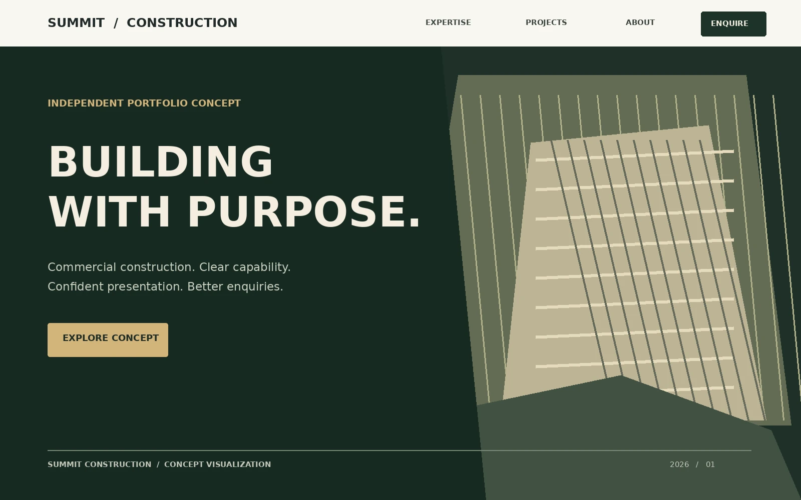
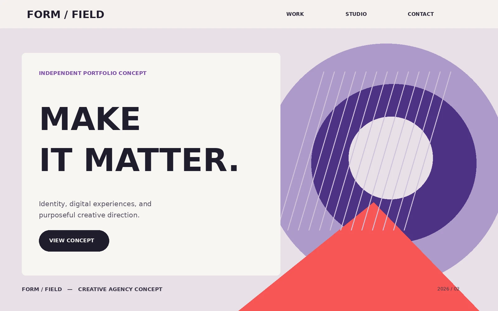

Website Development
Fast, responsive business websites designed to build credibility, communicate your value, and turn visitors into enquiries.
- Business & Service Websites
- Responsive Development
- Speed & Performance Optimization
01 Independent digital studio
Independent web design and development for ambitious businesses. I build distinctive, fast, easy-to-use websites designed to earn trust and turn attention into genuine enquiries.
01 Built for business
Summit Construction — website concept
02 The Khizar Studio approach
Design, development, and purposeful motion become one coherent digital experience.
A distinctive visual identity.
Built for speed and reliability.
Every interaction has a purpose.
02 What we do
Your website should do more than look good. It should build trust, communicate your value, and help the right customers choose your business.
Fast, responsive business websites designed to build credibility, communicate your value, and turn visitors into enquiries.
Thoughtful layouts and refined visual design that make your business look professional and help customers find what they need.
Purposeful animations and polished interactions that bring your website to life without sacrificing usability or speed.
Every project is built around a simple goal: create something your business can actually use to grow.
See our work ↘03 Selected work · Independent website concepts

An independent design mockup for a commercial construction website, designed to communicate expertise, showcase project capabilities, and encourage quote requests.
03 Selected work · Independent website concepts

An independent creative-agency design mockup combining expressive visuals, refined motion, and a clear presentation of services.
04 About Khizar Studio
Khizar Studio creates premium websites for businesses that want a stronger digital presence and a better first impression.
Every project combines modern design, thoughtful user experience, high-performance development, and subtle animations to create websites that feel professional without sacrificing usability.
The goal is simple: build a website that represents the quality of the business behind it and turns visitors into potential customers.
Every design decision has a purpose, from the first impression to the final call to action.
Clean layouts, strong typography, refined interactions, and visual details that communicate quality.
Modern technologies and efficient development keep the experience fast, responsive, and reliable.
05 How we work
Great websites start with a clear plan. From understanding your business to launching your website, every stage has a purpose, so you know what comes next and what to expect.
We begin by understanding your business, goals, audience, competitors, and vision to create a clear strategy before any design or development starts.
A clean, modern interface is designed around your brand with a strong focus on user experience, conversion, accessibility, and visual consistency.
Your website is built using modern technologies with fast performance, responsive layouts, SEO best practices, and maintainable code.
After thorough testing, the website is deployed, optimized, and prepared for long-term growth with ongoing improvements and support.
From the first conversation to launch, every decision is intentional. Start your project ↗
06 How I work · Good to know
Know what is being built, why it matters, and what comes next. No unnecessary complexity or surprises.
Every layout, interaction, and call to action serves the business and the people using the website.
Responsive implementation, accessibility, and performance are part of the process from the start.
Most projects are completed within 2 to 6 weeks depending on complexity.
Projects are built using modern technologies including Next.js, TypeScript, Tailwind CSS, GSAP, Motion, and Lenis.
Yes. Maintenance, updates, and improvements can be provided after launch.
07 Let's work together
Tell me about your business, your goals, and what you want your website to achieve. Let’s explore how thoughtful design and development can help.
khankhizarht@gmail.com ↗